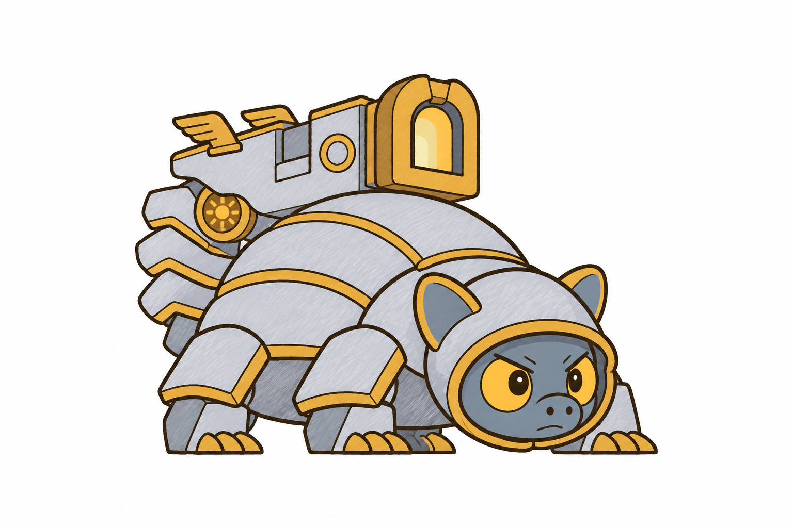
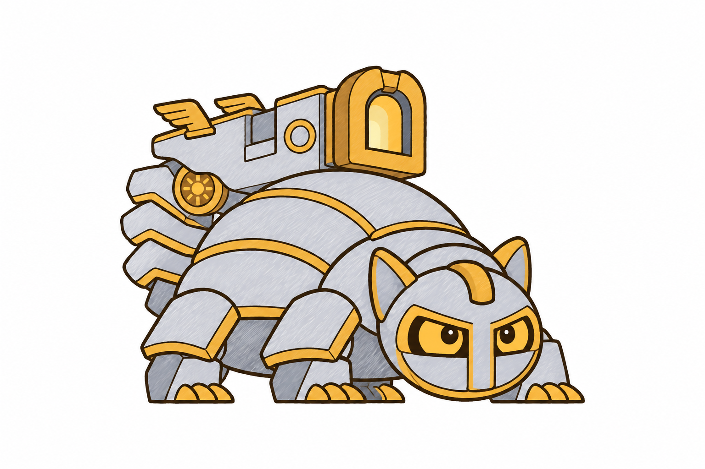
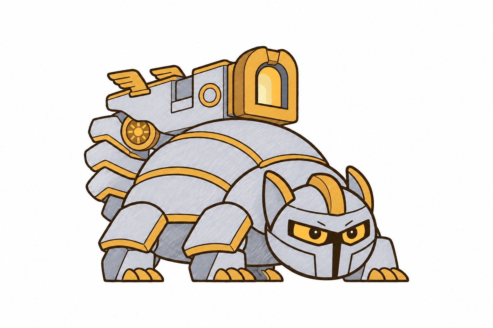
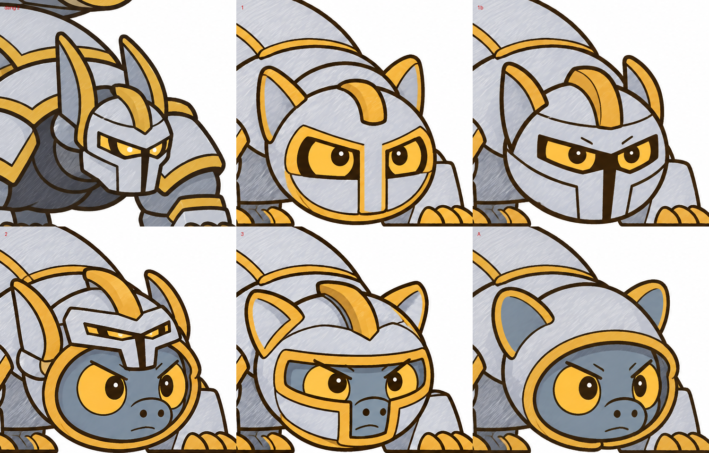
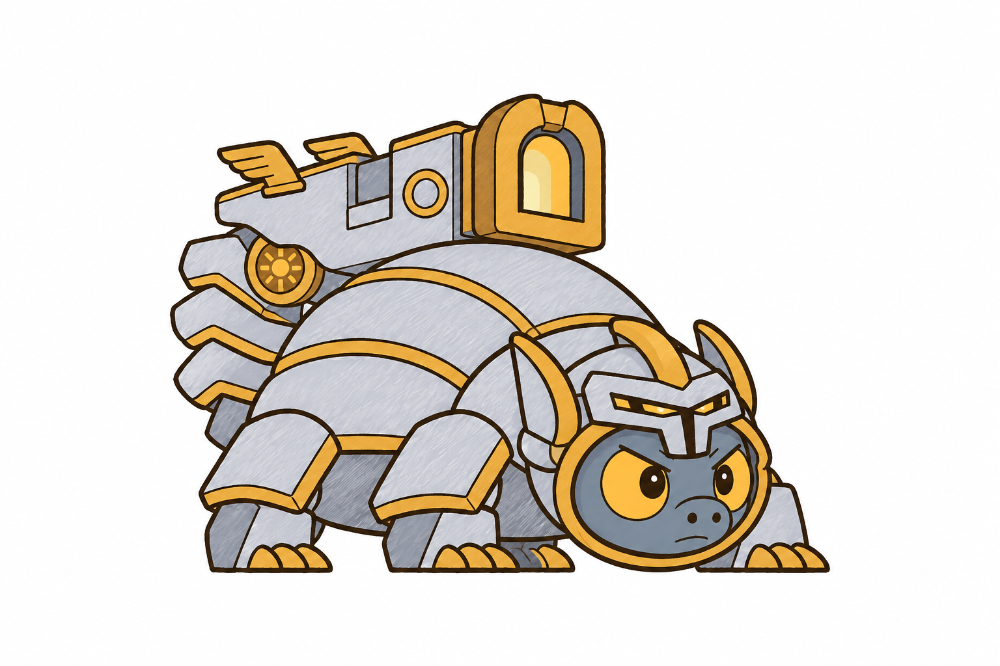
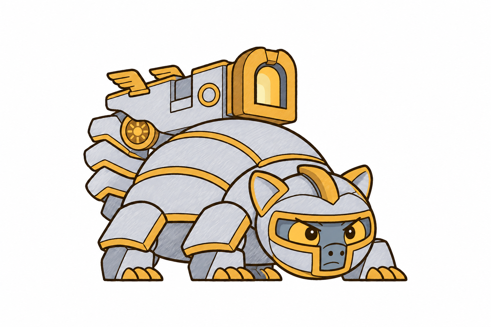

Thú giáp pháo dạng 1 — lượt 1b: sửa đầu bản A cho cùng dòng dạng 2
 Dạng 2 đã duyệt: mũ hiệp sĩ khe chữ T, chỏm vàng, tai giáp nhọn cao
Dạng 2 đã duyệt: mũ hiệp sĩ khe chữ T, chỏm vàng, tai giáp nhọn cao

Bản A (thân giữ nguyên, đầu cần sửa)

Kiểu 1 mũ hiệp sĩ non khép: tròn hơn, khe chữ T rộng lộ hai mắt tròn to, chỏm vàng ngắn, tai giáp nhọn ngắn

Kiểu 1b (đề xuất) cùng lời dặn kiểu 1, lượt gen thứ hai: gần mũ dạng 2 nhất (khe chữ T, mắt xếch quả quyết), tròn và non hơn

Cận đầu: dạng 2, 1, 1b / 2, 3, bản A

Kiểu 2 mũ hiệp sĩ dạng 2 mở tấm che: tấm che đẩy lên trán, lộ mặt thú con bên dưới

Kiểu 3 mũ hiệp sĩ khoét chữ T rộng: mắt thú ở thanh ngang, mõm ở thanh dọc nhìn qua